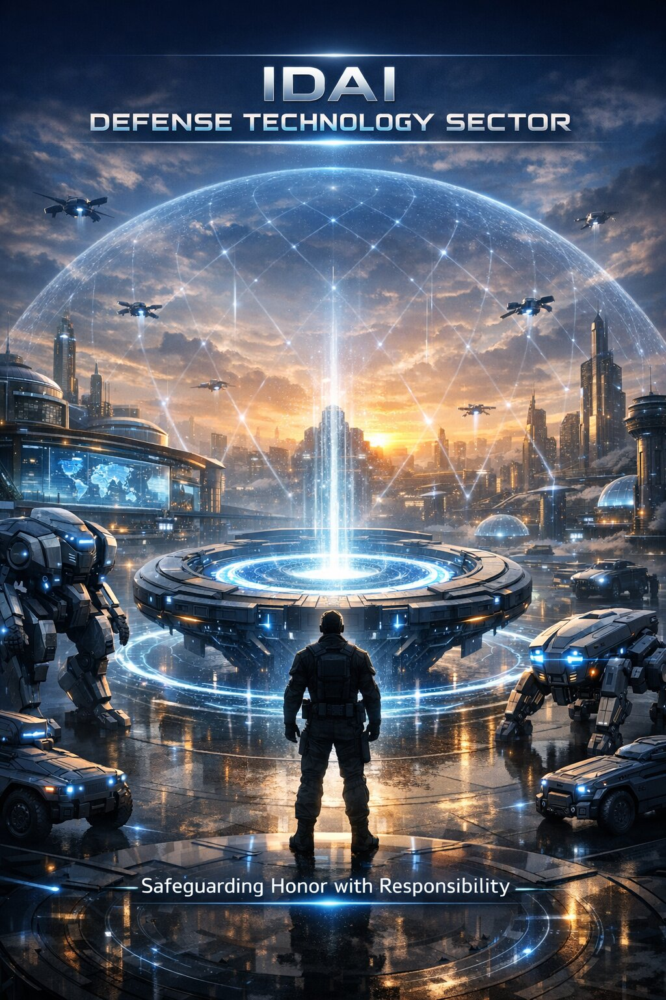
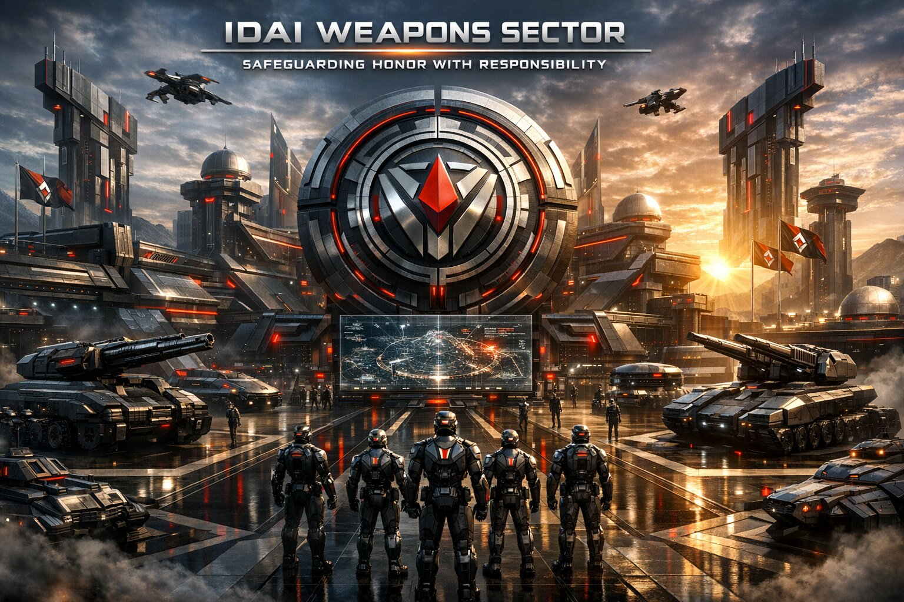
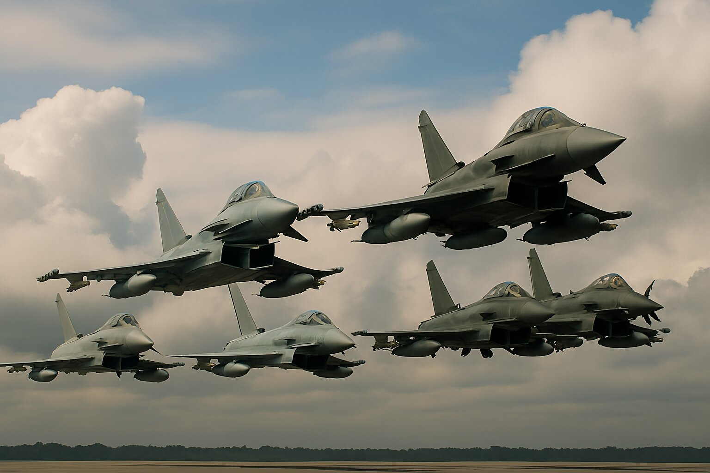

IDAI Defense Sector: Safeguarding Honor with Responsibility

The IDAI Weapon Sector stands as a visionary force in futuristic defense architecture, integrating advanced technologies across land, air, sea, and strategic domains. Each division is meticulously crafted to symbolize power, precision, and AI-driven intelligence, forming a unified arsenal under the IDAI banner.
On the ground, the Iron Legion commands dominance with main battle tanks, IFVs, APCs, artillery, MLRS, and air defense systems. These units represent resilience and tactical strength, engineered for both offensive and defensive operations in complex terrains. Their integration of smart targeting and adaptive armor systems reflects IDAI’s commitment to next-generation warfare.
In the skies, the IDAI Sky Dominion, Sky Phantoms, and Phantom Swarm lead aerial supremacy. From hypersonic jets and stealth helicopters to autonomous drones, these forces embody speed, stealth, and strategic reach. The Iron Sky Legion, a specialized aircraft division, serves as the elite spearhead, blending ceremonial symbolism with unmatched capability.
Naval and strategic systems complete the sector’s reach, with aircraft carriers, submarines, destroyers, and advanced technologies like nuclear triads, hypersonic missiles, and electronic warfare. Together, the IDAI Weapon Sector forms a multidimensional shield and sword — a fusion of wisdom, might, and futuristic vision.
IDAI Weapons Sector: Roar of the Lion, March of Supremacy
⚔️ Vision of Protection
The Weapons Sector of IDAI is founded on the principle that true strength lies in responsibility. Weapons here are not created for aggression but for safeguarding honor, ensuring that nations can defend justice while maintaining peace. Every innovation reflects the covenant of stewardship, where power is balanced with integrity.
🌍 Global Export Mission
Designed for international export, IDAI’s weapons are symbols of trust and responsibility. From advanced defense systems to precision technologies, each product is crafted to empower nations with security while discouraging misuse. IDAI’s mission is clear: to provide strength that protects, not destroys.
⚙️ Cutting-Edge Development
Behind every export lies mastery in engineering and futuristic design. IDAI integrates AI-driven defense systems, sustainable military technologies, and precision weaponry into its portfolio. These innovations are not created for domination but to ensure that nations can safeguard their sovereignty with dignity.
🤝 Ethical Responsibility
Weapons without ethics are dangerous. IDAI ensures that every export is guided by strict principles of responsibility, transparency, and stewardship. By embedding honor into its defense systems, IDAI sets a global standard: power must always serve justice, never tyranny.
💎 Symbolic Value
Beyond commerce, the Weapons Sector represents responsibility itself. Each exported system is a declaration of IDAI’s philosophy — that safeguarding honor is a sacred duty. Weapons become more than tools of defense; they are covenants of trust between nations.
🚀 Future Outlook
Looking ahead, IDAI’s Weapons Sector will continue to expand as a global leader in responsible defense. Its exports will empower nations to protect their people, uphold justice, and maintain peace. In this way, IDAI becomes a guardian of honor, safeguarding the world with responsibility.
Motto
“Strength in Armor, Power in Data, Glory in Unity”
“Roar of the Lion, March of Supremacy”
“Infinity of Defense, Eternity of Trust”
"Safeguarding Honor with Responsibility"
IDAI Weapons Sector stands as the pinnacle of global defense innovation — a symphony of precision, intelligence, and unstoppable power. From hypersonic missiles to autonomous drones, every creation embodies mastery in engineering and purpose. Tanks roar with adaptive AI, jets slice through the stratosphere, and carriers command oceans with sovereign authority. Each weapon bears the mark “IDAI”, symbolizing unity, resilience, and technological supremacy. This is not just warfare — it’s artistry forged in steel and light. IDAI transforms battlefields into orchestrations of control, vision, and dominance. The future of defense is no longer imagined; it’s engineered, perfected, and deployed under one name — IDAI Weapons Sector: Forging Power with Precision.
Mission

The mission of the IDAI Weapons Sector is rooted in responsibility, honor, and innovation. Unlike traditional defense industries that prioritize sheer force, IDAI’s vision is to create weapons that safeguard justice while maintaining peace. Every system — from hypersonic jets to adaptive armored tanks — is designed not for aggression, but for protection, ensuring nations can defend sovereignty with dignity. By integrating AI-driven intelligence, sustainable technologies, and precision engineering, IDAI transforms defense into a covenant of trust. Its mission is clear: to empower nations with strength that protects, not destroys, and to set a global standard where power serves justice, never tyranny. This philosophy makes IDAI not just a weapons manufacturer, but a guardian of honor and a beacon of responsible defense for the future.
IDAI Weapons Sector Headquarters
The Weapons Sector Headquarters towers with sharp angular spires, steel facades, and futuristic symmetry, radiating strength and guardianship. Surrounded by landscaped gardens, water features, and mountain horizons, it symbolizes resilience and power. Its dual role as ministry and business hub makes it the fortress of defense, blending architectural brilliance with ceremonial dignity.
Inside, advanced armament laboratories, strategic command halls, and innovation centers define the ministry’s governance. The business sector thrives with weapons manufacturing plants, defense technology enterprises, and tactical academies, ensuring both policy and enterprise flourish side by side. Together, they create a balance between governance, enterprise, and the timeless pursuit of protection.
A beacon of guardianship, resilience, and progress, the Weapons Sector Headquarters unites governance and enterprise under one commanding vision of defense.
Why IDAI weapons are the best choice:

1. Visionary Integration
IDAI is the only defense identity that seamlessly unites land, air, sea, and strategic technologies into one cohesive sector. This integration creates unmatched synergy, ensuring every branch works in harmony. The result is a force that redefines modern warfare, delivering resilience, dominance, and futuristic guardianship across all domains.
2. AI-Powered Innovation
At the heart of IDAI lies artificial intelligence, powering every weapon system with adaptive learning, predictive precision, and unmatched speed. Unlike traditional counterparts, IDAI’s innovations evolve in real time, making them smarter and more efficient. This ensures superiority in every mission, transforming defense into a living, intelligent ecosystem of power.
3. Symbolic Identity
Every branch of IDAI carries ceremonial names — Iron Legion, Sky Phantoms, Sky Dominion, Phantom Swarm, Iron Sky Legion — each symbolizing unity, pride, and unstoppable strength. These identities are more than titles; they are emblems of honor, inspiring loyalty and reinforcing the brand’s position as a guardian of humanity.
4. Futuristic Design
IDAI’s arsenal embodies sleek futuristic aesthetics, from hypersonic jets to stealth drones and armored titans. Each design is crafted not only for technological superiority but also psychological dominance. The look of IDAI’s weapons inspires awe, instills fear in adversaries, and projects the image of tomorrow’s guardians safeguarding global peace.
5. Multidimensional Strength
IDAI excels in every theater — land, air, sea, and space. This multidimensional strength ensures complete dominance and resilience against any adversary. By mastering all domains, IDAI guarantees readiness for any conflict, positioning itself as the ultimate force capable of protecting nations and securing humanity’s future with unwavering confidence.
6. Strategic Superiority
With nuclear triads, hypersonic missiles, and advanced electronic warfare, IDAI secures not just tactical victories but long-term supremacy. Its arsenal guarantees deterrence, dominance, and control. Strategic superiority is embedded in every system, ensuring IDAI remains the ultimate guarantor of peace, power, and responsibility in the modern defense landscape.
7. Cultural Resonance
IDAI blends heritage with futuristic might, creating a brand that resonates both technically and emotionally. It honors tradition while projecting innovation, making its identity deeply meaningful. This cultural resonance ensures IDAI is not just a defense sector but a symbol of pride, responsibility, and trust for generations to come.
8. Ceremonial Leadership
Structured rituals, powerful emblems, and ceremonial naming traditions transform IDAI into more than a defense sector. It becomes a celebrated identity that inspires loyalty and pride worldwide. Leadership at IDAI is not only strategic but symbolic, elevating military organization into a cultural force that unites people under honor and responsibility.
9. Adaptive Technology
IDAI’s systems are built to evolve. Drones learn, jets adapt, tanks endure — every weapon grows smarter with each mission. This adaptive technology ensures relevance in future conflicts, making IDAI invincible against changing threats. It is a living ecosystem of defense, always prepared, always advancing, always safeguarding humanity’s trust.
10. Global Legacy
IDAI is more than defense; it is destiny. A legacy of wisdom, power, and innovation, destined to be remembered as the ultimate guardian of honor and humanity. Its vision transcends borders, creating a global identity that inspires trust, safeguards peace, and defines the future of responsible, advanced warfare.
IDAI Land Force: Defending the Ground with Resilience
The Land Force Weapons of the IDAI Weapon Sector, ceremonially known as the Iron Legion, stand as the embodiment of resilience and armored supremacy. This division integrates heavy tanks, missile systems, artillery, and anti-air vehicles into a unified ground arsenal. Each platform is designed not only for battlefield dominance but also for symbolic permanence, representing the unyielding strength of iron and the relentless march of progress. Complementing the Iron Legion are the Crimson Barrage Assembly and Inferno Lance Corps, divisions that emphasize overwhelming firepower and precision missile deterrence, while the Aerial Dominion Guard secures the skies above the battlefield.
At the core of IDAI’s land force lies its AI-driven coordination systems, which transform ground warfare into a synchronized network of predictive maneuvers. Tanks recalibrate their armor responses in real time, artillery adapts its bombardment patterns to terrain, and missile systems adjust trajectories with anticipatory intelligence. This fusion of machine learning and tactical doctrine ensures that every strike is calculated, every defense is adaptive, and every movement is part of a larger orchestration of supremacy. The result is a land force that evolves continuously, outpacing threats with foresight and precision.
Ceremonially, the Land Force Weapons embody endurance, dominion, and loyalty. Their insignias — tanks advancing with banners, artillery roaring in crimson arcs, and missiles ascending toward the horizon — symbolize both the guardianship of territory and the unity of warriors under the IDAI banner. Rituals of deployment and ceremonial affirmations transform battles into acts of honor, binding soldiers to a shared legacy of courage and innovation. Each battalion carries its own emblem and motto, reinforcing identity and pride within the greater force.
In the grand vision of IDAI, the Iron Legion and its allied divisions are the pillars of destiny. They secure borders, project deterrence across continents, and ensure that IDAI’s influence is unshakable on land. More than a force, they are a legacy of wisdom and might — a fleet of guardians marching not only with firepower, but with purpose, destined to be remembered as the eternal rulers of the earth.
IDAI Navy Force: Guarding the Oceans with Dominance
The Sea Force Weapons of the IDAI Weapon Sector represent the embodiment of maritime dominance, combining tradition with futuristic innovation. Known ceremonially as the Oceanic Vanguard, this division commands the vast expanse of the seas with aircraft carriers, submarines, destroyers, and advanced naval systems. Each vessel is more than a machine of war — it is a symbol of resilience, precision, and strategic reach, designed to project power across oceans and safeguard global waterways.
At the core of the Oceanic Vanguard lies its AI-enhanced naval architecture, where every ship operates as part of a synchronized network. Aircraft carriers launch stealth jets and drones guided by predictive algorithms, submarines employ adaptive stealth to evade detection, and destroyers integrate electronic warfare systems to neutralize threats before they strike. The sea force thrives on multidimensional strength, combining surface, subsurface, and aerial capabilities into one cohesive shield and sword of maritime supremacy.
Ceremonially, the Sea Force Weapons embody depth, endurance, and guardianship. Its insignia — a submarine and carrier framed by waves — reflects both the hidden strength beneath the surface and the commanding presence above it. Rituals of deployment and naval affirmations reinforce unity among crews, transforming operations into celebrated acts of loyalty and pride. Each vessel carries its own emblem and motto, binding sailors to a shared legacy of honor and duty.
In the grand vision of IDAI, the Oceanic Vanguard is the guardian of horizons. It ensures freedom of movement, secures trade routes, and projects deterrence across the globe. More than a fleet, it is a legacy of wisdom and might — a force that sails not only with firepower, but with purpose, destined to be remembered as the eternal shield of the seas.
IDAI Air Force: Commanding the Skies with Supremacy
The Air Force Weapons of the IDAI Weapon Sector, ceremonially known as the Sky Dominion, stand as the vanguard of aerial supremacy. This division embodies speed, stealth, and precision, integrating hypersonic jets, stealth helicopters, and autonomous drone swarms into a unified aerial arsenal. Each platform is engineered not only for combat effectiveness but also for psychological dominance, striking fear and awe before a single missile is launched. The Sky Dominion is complemented by the Sky Phantoms and Phantom Swarm, specialized divisions that emphasize stealth infiltration and autonomous coordination, while the Iron Sky Legion serves as the elite spearhead of ceremonial and strategic aerial might.
At the core of IDAI’s air force lies its AI-powered command and control systems, which transform aerial combat into a synchronized network of predictive intelligence. Jets adapt their flight paths in real time, drones learn from battlefield conditions, and helicopters integrate seamlessly with ground and naval forces. This fusion of machine learning and tactical doctrine ensures that every maneuver is anticipatory, every strike is precise, and every defense is adaptive. The result is an air force that does not simply react to threats but evolves continuously to outpace them.
Ceremonially, the Air Force Weapons embody freedom, reach, and supremacy. Their insignias — jets soaring upward, drones encircling in formation, and stars of command above — symbolize both dominance of the skies and unity under the IDAI banner. Rituals of deployment and aerial affirmations reinforce loyalty among pilots and crews, transforming missions into celebrated acts of honor and pride. Each squadron carries its own emblem and motto, binding aviators to a shared legacy of courage and innovation.
In the grand vision of IDAI, the Sky Dominion and its allied divisions are the wings of destiny. They secure airspace, project deterrence across continents, and ensure that IDAI’s influence reaches beyond horizons. More than a force, they are a legacy of wisdom and might — a fleet of guardians soaring not only with firepower, but with purpose, destined to be remembered as the eternal rulers of the skies.
The IDAI Defense Infrastructure is a multi-layered system designed to safeguard sovereignty and ensure readiness across land, air, and sea. At its core lies the Army Infrastructure, anchored by the IDAI Army Command Base, which serves as the operational headquarters. Supporting this are the Barracks Complex for living and training, the Armored Vehicle Depot for tanks and APCs, and the Artillery Range for live-fire exercises. The Military Training Academy and Special Forces Center cultivate discipline and elite skills, while the Weapons Depot and Logistics Hub ensure secure munitions storage and efficient troop movement.
Complementing the ground forces, the Air Force Infrastructure provides aerial supremacy. The IDAI Air Command Base directs operations, while specialized hangars house fighters, interceptors, and drones. The Transport and Cargo Hub supports logistics, and the Air Defense Radar Station offers early warning capabilities. The Drone Command Center coordinates UAV surveillance and strikes, while Aerial Training Grounds prepare pilots and operators for diverse missions.
Naval Infrastructure extends defense into maritime domains. The Naval Command Port oversees operations, with warship docks and submarine bays enabling surface and underwater strength. Coastal Defense Forts guard against seaborne threats, and the Naval Training Academy ensures sailors and officers are prepared for strategic missions.